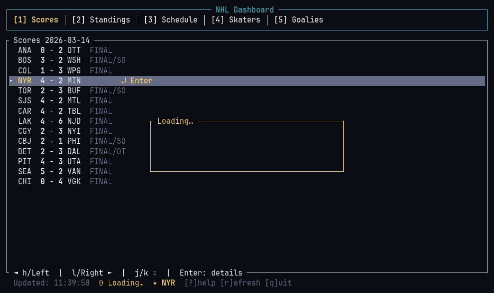

Twenty-six macro instruments on one screen — live prices, a month of daily closes, and the headlines moving them. Pick a row for a chart and the news that mentions it.
$ curl -fsSL https://tui.jp305.dev/macro-tui/install.sh | sh
small · fast · keyless
$ tui --list
2 apps — one static binary each. No API keys, no signup, no configuration. They inherit your terminal's colours and render to stderr, so piping still works.
Twenty-six macro instruments on one screen — live prices, a month of daily closes, and the headlines moving them. Pick a row for a chart and the news that mentions it.
$ curl -fsSL https://tui.jp305.dev/macro-tui/install.sh | shLive scores, the wild card race, the schedule and the scoring leaders. Pick a game and get the whole boxscore, period by period.
$ curl -fsSL https://tui.jp305.dev/nhl-tui/install.sh | sh
$ cat method.txt
common terminal lifecycle · event pump · config · size-capped http · layout macro state, keys, screens — markets nhl state, keys, screens — hockey feeds public + keyless → nothing to configure repo one repository: github.com/jp30566347/tui